유통관리사-2급 (2015-11-08 기출문제)
1과목: 유통물류일반
1. 리더의 권력기반(power source)에 해당하지 않는 것은?
- 강제적 권력
- 보상적 권력
- 준거적 권력
- 효율적 권력
- 합법적 권력
(정답률: 78%)

2. 다음의 설명과 관련 있는 수요-공급 특성에 적합한 공급사슬전략은?
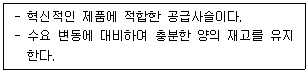
- 효율적 공급사슬
- 반응적 공급사슬
- 린 공급사슬
- 민첩공급사슬
- 역공급사슬
(정답률: 38%)
3. 고전적 경영이론 중 작업의 분업화가 필연적인 것이라면, 시간연구와 동작연구를 통해 표준작업시간을 결정하고 관리자의 권한은 최대한 줄이며 작업과 작업도구를 표준화시켜야 한다고 주장한 인물은?
- 페욜(H. Fayol)
- 베버(M. Weber)
- 핸디(Handy)
- 테일러(Taylor)
- 포드(Ford)
(정답률: 50%)
4. 투자안의 경제적 평가기법 중 회수기간법의 장점으로 가장 옳지 않은 것은?
- 기업의 유동성 확보와 관련된 의사결정에 유용하다.
- 회수기간이 짧은 투자안일수록 안전하다.
- 현금흐름이 불확실할 경우에 유용한 평가기법이다.
- 투자안을 평가하는데 필요한 시간과 비용이 절약된다.
- 화폐의 시간적 가치를 고려한다.
(정답률: 46%)
5. 자재·부품·서비스·설비를 자체적으로 생산하지 않고 외부에서 구매하거나 외주를 주는 일반적인 이유를 기업 측면에서 기술한 것으로 옳지 않은 것은?
- 설계, 제조 및 배송 프로세스 등에 직접 관여하여 리드타임과 물류비를 쉽게 통제할 수 있기 때문이다.
- 규모의 경제를 이룰 수 있는 자재에 대해서 비용상 이점이 있기 때문이다.
- 충분한 생산능력이 갖추어지지 않은 경우나 수요가 예상보다 갑자기 증가하여 수요를 충족시킬 수 없을 때가 있기 때문이다.
- 기업이 특정 품목을 생산할 만한 기술과 전문성이 없을 때가 있기 때문이다.
- 공급자가 우수한 기술과 공정, 숙련된 작업자 등을 가지고 있어서 오히려 구매 부품이 품질 면에서 더 우수할 수 있기 때문이다.
(정답률: 79%)
6. 다음의 ( ) 안에 알맞은 용어는?
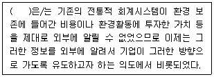
- ABC활동원가기준
- 그린회계(green accounting)
- 재무분석
- 조정활동(coordinating)
- 포트폴리오분석(portfolio analysis)
(정답률: 81%)
7. 국제물류의 특성에 대한 내용으로 옳지 않은 것은?
- 수출입을 위한 국제물류 관련 서류의 복잡성과 다양성
- 국경간 이동에 따른 복잡성을 포함하여 전체적인 절차의 복잡성과 긴 리드타임
- 간소화된 운송절차로 인한 복합운송주선인 등의 물류서비스 중재자의 불필요
- 항만 또는 공항을 통한 복합일관운송의 보편화
- EDI(Electronic Data Interchange), 인터넷 등을 활용한 물류정보시스템의 이용 증대
(정답률: 60%)
8. 수요예측뿐만 아니라 다양한 형태의 의견조사에 활용되는 기법으로, 전문가그룹을 선정한 후 반복적인 설문조사를 통해 수요예측치를 추정하도록 하는 기법은?
- 델파이기법
- 시장조사법
- 포커스그룹인터뷰기법
- 지수평활법
- 회귀분석법
(정답률: 82%)
9. 소비자에게 인도된 제품의 전체 또는 일부가 일정시간이 경과한 후 다시 생산자에게 돌아오거나 폐기되는 과정을 관리하는 것은?
- 생산물류
- 역물류
- 조달물류
- 판매물류
- 사내물류
(정답률: 93%)
10. 제4자 물류에 대한 설명으로 옳지 않은 것은?
- 물류업무를 수행할 기업들이 합작투자형태로 존재한다.
- 제3자 물류서비스기능에 고객관리기능, 물류기획기능, 컨설팅 기능 등이 추가된다.
- 특정 물류업무를 전문적으로 수행하는 독립법인으로 공급사슬 상의 기능 일부를 대행하며 운영된다.
- 화주기업은 컨소시엄 형태로 된 물류 전문업체와 관계를 맺는다.
- 물류조직은 고객인 화주기업과 물류서비스 제공자간에 단일창구 역할을 수행해야 한다.
(정답률: 32%)
11. 일반적으로 창고내에서 활용될 수 있는 보관 원칙으로 가장 옳지 않은 것은?
- 통로대면보관 원칙
- 선입선출 원칙
- 낮게 쌓기 원칙
- 회전대응보관 원칙
- 중량특성 원칙
(정답률: 84%)
12. 고객서비스의 구성요소는 거래전 요소, 거래중 요소, 거래후 요소로 나눌 수 있다. 이 중 거래중 요소들로 올바르게 짝지어진 것은?
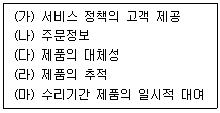
- (가), (나), (다)
- (나), (다)
- (가), (라), (마)
- (다), (라)
- (나), (다), (라)
(정답률: 30%)
13. 경제적 주문모형의 전제조건으로 옳지 않은 것은?
- 단일품목에 대해서만 가정한다.
- 주문량에 따른 할인을 가정한다.
- 수요는 일정하다고 가정한다.
- 연간수요량은 알려져 있다.
- 조달기간은 일정하다.
(정답률: 71%)
14. 유통에 대한 설명으로 옳지 않은 것은?
- 유통기능은 크게 소유권 이전기능, 물류기능, 유통조성기능 등으로 구분할 수 있다.
- 유통산업발전법상의 유통산업이란 유통과정에 참여하는 모든 중간상, 물류기관, 금융기관 등을 모두 포함하여 일컫는 말이다.
- 유통경로수준이란 생산자와 소비자 사이에 중간상이 몇 단계에 걸쳐서 개입하는가를 말한다.
- 유통흐름(flow)에는 생산자에서 소비자로 흐르는 것도 있지만, 그 반대의 흐름도 있다.
- 유통경로란 생산에서 최종 소비자까지 소유권이 이전되어 가는 경로를 말한다.
(정답률: 52%)
15. 채찍효과(Bullwhip Effect)를 줄일 수 있는 방안으로 가장 옳지 않은 것은?
- 각각의 주체가 독립적인 수요예측을 통해 정확성과 효율성을 높인다.
- 공급리드타임을 줄일 수 있는 방안을 마련한다.
- 공급체인에 소속된 각 주체들이 수요 정보를 공유한다.
- 지나치게 잦은 할인행사를 지양한다.
- EDLP(항시저가정책)를 통해 소비자의 수요변동 폭을 줄인다.
(정답률: 71%)
16. (ㄱ), (ㄴ) 안에 들어갈 단어를 순서대로 가장 옳게 나열한 것은?
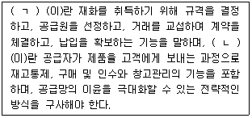
- 구매, 재고관리
- 판매, 재고관리
- 판매, 조달
- 조달, 재고관리
- 구매, 조달
(정답률: 50%)
17. 다음의 내용을 담고 있는 관련 법은?
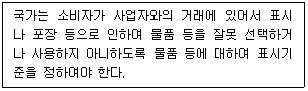
- 유통산업발전법
- 소비자기본법
- 청소년보호법
- 전통시장 및 상점가 육성을 위한 특별법
- 소방기본법
(정답률: 69%)
18. 물류관리 비용 중 측정이 용이한 비용(가시적 비용)으로만 올바르게 짝지어진 것은?
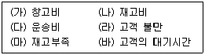
- (가), (나), (마)
- (나), (다), (라)
- (라), (마), (바)
- (가), (나), (다)
- (나), (라), (마)
(정답률: 80%)
19. 용어에 대해 설명한 것이다. 이 중 옳은 것을 모두 나열한 것은?
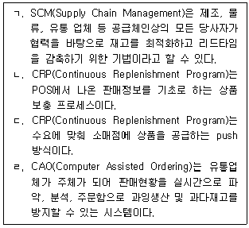
- ㄱ
- ㄱ, ㄴ
- ㄱ, ㄷ
- ㄱ, ㄴ, ㄷ
- ㄱ, ㄴ, ㄹ
(정답률: 51%)
20. 인수 및 합병(M&A)의 방식에 대한 설명으로 옳지 않은 것은?
- 자산인수 - 영업권을 제외한 일체의 유형 자산을 매수하는 것
- 흡수합병 – 인수기업이 대상기업을 흡수하는 것
- 신설합병 – 양 기업이 합병하여 새로운 회사를 설립하는 것
- 역합병 – 실질적인 인수기업이 소멸하고 피인수기업이 존속하는 것
- 주식인수 – 주식 매수를 통해 회사의 경영권을 인수하는 것
(정답률: 61%)
21. 재고관리를 제대로 하지 못하여 결품(缺品)이 발생하였을 때 발생하는 손실 또는 문제와 관련이 없는 것은?
- 판매손실(lost sales)
- 품절비용(stockout cost)
- 고객상실(customer loss)
- 상품로스(merchandise loss)
- 주문이월(backorder)
(정답률: 40%)
22. 소매업태의 진화를 설명하는 소매차륜(wheel of retailing) 가설에서 신업태가 성장기에 진입하였을 때의 업태 특성을 제대로 나열한 것은?
- 저(低)서비스 - 저(低)코스트 - 중(中)가격
- 고(高)서비스 - 고(高)코스트 - 고(高)가격
- 고(高)서비스 - 저(低)코스트 - 중(中)가격
- 저(低)서비스 - 고(高)코스트 - 저(低)가격
- 저(低)서비스 - 저(低)코스트 - 저(低)가격
(정답률: 58%)
23. 매입관리에서 말하는 매입에 대한 설명으로 가장 옳지 않은 것은?
- 매입은 필요로 하는 지정된 물자 또는 용역을 그에 상당하는 일정한 대가를 지불하고 다른 경제 주체로 부터 획득하는 경제 행위를 말한다.
- 쌍방매입은 소매업체가 잘 팔리지 않은 다른 공급업체의 상품을 일시에 해결하기 위해 상호간 재고를 해결할 수 있는 다른 공급업체로부터 물건을 공급받는 방식이다.
- 직매입은 일반적으로 점포가 상품을 매입하는 가장 근원적인 방법으로 상품의 독창성, 수익성을 확보하기 위한 최선의 방법을 말한다.
- 위탁매입은 소매업자가 일정 기간 동안 최종 소비자에게 제품을 판매한 후 사전에 결정된 일정비율의 커미션만 받고 남은 제품을 공급업자에게 반품하는 방법을 말한다.
- 약정구매는 소매업자가 납품받은 상품에 대한 소유권을 보유하되 일정 기간 동안에 팔리지 않은 상품은 다시 납품업자에게 반품하거나 혹은 다 팔린 후에 대금을 지급하는 권리를 보유하는 조건으로 구매하는 방식이다.
(정답률: 55%)
24. 한정기능도매상(limited-service wholesalers)의 한 형태로 박스 안의 설명에 해당하는 것은?
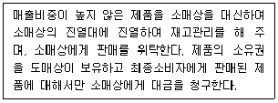
- 직송도매상(drop shipper)
- 진열도매상(rack jobber)
- 현금거래 도매상(cash and carry wholesaler)
- 산업재 유통업자(industrial distributor)
- 트럭중개상(truck jobber)
(정답률: 82%)
25. 마이클 포터(Michael Porter)는 산업의 경쟁구조를 분석하기 위한 5요인 모형을 제안하였다. 다음 중 올바른 설명을 모두 나열한 것은?
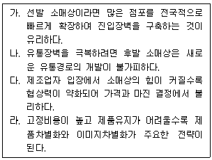
- 가, 다
- 나, 라
- 나, 다
- 가, 나, 다
- 가, 나, 다, 라
(정답률: 44%)
2과목: 상권분석
26. 상권분석에 사용되는 회귀모형에 대한 설명으로 옳지 않은 것은?
- 회귀모형을 통해 점포특성, 상권내 경쟁수준 등 다양한 변수들이 점포성과에 미치는 상대적 영향을 측정할 수 있다.
- 단계적 회귀분석(stepwise regression)은 변수가 너무 많아 해석이 어려워지는 것을 방지할 수 있다.
- 회귀모형의 설명변수들은 서로 상호연관성 즉, 상관관계가 높을 때 신뢰성 있는 결과를 도출할 수 있다.
- 과거의 연구결과 혹은 분석가의 판단 등을 토대로 소수의 변수를 선택하여 회귀모형을 도출할 수 있다.
- 신규점포의 입지타당성을 분석하는 경우, 유사한 거래특성과 상권을 가진 표본을 충분히 확보해야하는 문제점을 해결해야 한다.
(정답률: 66%)
27. Huff모델과 MNL모델에 대한 설명으로 옳지 않은 것은?
- Huff모델과 MNL모델은 모두 상권분석 기법 중에서 확률적 모형에 해당된다.
- 두 모델은 일반적으로 상권을 소규모의 세부지역(zone)으로 나누는 절차를 거친다.
- Huff모델과 달리 MNL모델은 점포의 이미지 등 다양한 영향변수를 반영할 수 있다.
- MNL모델은 점포의 객관적 특성 보다는 소비자의 주관적 평가자료를 활용한다.
- MNL모델은 상권분석을 할 때마다 변수의 민감도계수를 추정하는 절차를 거치게 된다.
(정답률: 41%)
28. 중심지이론에 대한 설명으로 옳지 않은 것은?
- 평지상의 어떤 곳도 중심지에 의해 서비스를 제공받지 못하는 곳은 없다고 가정한다.
- 최소요구범위는 생산자가 초과이윤을 얻을 만큼 충분한 소비자들을 포함하는 경계까지의 거리이다.
- 중심지 활동의 도달범위란 중심지 활동이 제공되는 공간적 한계를 의미한다.
- Christaller의 중심지이론은 인간의 각종 활동공간이 어떤 핵을 중심으로 배열되어 있다는 인식에서 비롯되었다.
- 조사대상 지역은 구매력이 균등하게 분포하고 있다고 가정한다.
(정답률: 38%)
29. 점포의 입지를 평가하는 요인들에 대한 설명으로 옳지 않은 것은?
- 접근성은 물리적, 심리적 요인을 모두 포함하는 개념이다.
- 상권내 소비자의 주 동선상에 위치하거나 가까울수록 소비자의 유입률이 높아질 수 있다.
- 철도나 6차선 이상의 도로 등 인공지형물은 상권의 단절요인이 되는 경우가 많다.
- 일반적으로 이동 중에 점포가 보이는 거리로 점포의 가시성을 측정한다.
- 점포를 찾기 쉬운 정도나 점포위치를 설명하기 용이한가는 점포의 접근성에 해당한다.
(정답률: 59%)
30. 최근 상권분석을 위해 활용도가 높아지고 있는 GIS(Geographic Information System)에 대한 설명으로 옳지 않은 것은?
- 컴퓨터를 이용한 지도작성체계와 데이터베이스관리체계(DBMS)의 결합이다.
- 지도레이어는 점, 선, 면을 포함하는 개별 지도형상으로 구성되어 있다.
- gCRM을 실현하기 위한 기본적 틀을 제공할 수 있다.
- 주제도작성, 데이터 및 공간조회, 버퍼링(buffering)을 통해 효과적인 상권분석이 가능하다.
- 심도있는 분석을 위해 상권의 중첩(overlay)을 표현하는 작업은 아직 한계점으로 남아있다.
(정답률: 69%)
31. 다음은 어느 상권분석 방법과 관계된 용어들이다. 이 중 연관성이 없는 것은?
- 애플바움(W. Applebaum)
- CST(customer spotting)기법
- 유사점포(analog store)
- 점포선택 등확률선(isoprobability contours)
- 기술적 방법(descriptive method)
(정답률: 53%)
32. Huff모델과 관련한 설명으로 옳지 않은 것은?
- 소비자의 점포선택행동을 결정적 현상으로 본다.
- 소비자로부터 점포까지의 이동거리는 소요시간으로 대체하여 계산하기도 한다.
- 소매상권이 연속적이고 중복적인 구역이라는 관점에서 분석한다.
- 특정 점포의 효용이 다른 선택대안 점포들의 효용보다 클수록 그 점포의 선택가능성이 높아진다.
- 점포크기 및 이동거리에 대한 민감도계수는 상권마다 소비자의 실제구매행동 자료를 통해 추정한다.
(정답률: 52%)
33. 복합용도개발이 필요한 이유로 가장 옳지 않은 것은?
- 도시공간의 활용 효율성 증대를 위하여
- 신시가지의 팽창을 막고, 신시가지의 행정수요를 경감하기 위해서
- 도심지의 활력을 키우고 다양한 삶의 기능을 제공하는 장소로 바꾸기 위해서
- 도심 공동화를 막기 위해서
- 도시내 상업기능만의 급격한 발전보다는 도시의 균형적 발전을 위하여
(정답률: 55%)
34. 상권은 흔히 상품특성의 관점, 구매자의 관점, 판매자의 관점, 판매량의 관점, 지형적 관점 등으로 정의할 수 있다. 우리가 흔히 1차 상권, 2차 상권, 한계상권 등으로 분류하는 것은 아래의 어떤 관점에 근거한 것인가?(문제 오류로 가답안 발표시 3번으로 발표되었지만 확정답안 발표시 3, 4번이 정답처리 되었습니다. 여기서는 가답안인 3번을 누르시면 정답 처리 됩니다.)
- 상품특성의 관점
- 지형적 관점
- 판매량의 관점
- 판매자의 관점
- 구매자의 관점
(정답률: 72%)
35. 다음 입지분석 기법 중에서 프랜차이즈 본사와 같이 수십 개 또는 그 이상의 많은 점포를 운영하는 소매점의 경우에는 적용하기 용이하지만, 한두 개 점포만을 소유하고 있는 소매점에서는 현실적으로 활용하기 어려운 것들로 짝지어진 것은?
- MNL모델, 레일리모델
- 허프모델, MNL모델
- 허프모델, 회귀분석법
- 아날로그법, 레일리모델
- 아날로그법, 회귀분석법
(정답률: 48%)
36. 소매상권의 크기와 형태를 결정하는 직접적인 요인으로 가장 옳지 않은 것은?
- 경쟁점포와의 거리
- 취급상품의 종류
- 점포에 대한 접근성
- 종업원의 친절도
- 점포의 입지
(정답률: 82%)
37. 소매포화지수에 대한 설명으로 옳은 것은?
- 시장포화지수는 시장에 대한 기회를 평가할 수 있는 좋은 지표가 될 수 있다.
- 시장포화지수를 활용하더라도 특정 상품에 대한 경쟁의 정도는 평가할 수 없다.
- 시장포화지수는 특정 경쟁업체만 선정하여 지역내 주요경쟁지수를 평가할 수 있다.
- 지역내 단위면적당 잠재수요를 평가하기 위하여 타지역의 매출도 활용한다.
- 지수가 낮을수록 실제수요보다 잠재수요가 높다는 것을 의미하여 잠재성도 평가된다.
(정답률: 53%)
38. 한 소비자가 세 점포들 중 하나에서 상품을 구매할 수 있고, 소비자가 부여하는 점포 크기에 대한 모수는 1이라고 가정하자. 또한 점포 A, B, C의 크기 및 소비자의 집으로부터 각 점포까지의 거리가 표와 같다고 하자. Huff모델 적용시 거리모수가 -2에서 -3으로 변한다면, 소비자가 점포 C를 이용할 확률은 어떻게 변화하는가?
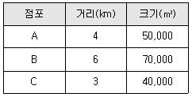
- 3.8%p 정도 감소한다.
- 3.8%p 정도 증가한다.
- 10.5%p 정도 감소한다.
- 10.5%p 정도 증가한다.
- 변화하지 않는다.
(정답률: 35%)
39. 공간균배의 원리에 의한 상점의 분류에 대한 내용으로 가장 옳지 않은 것은?
- 집심성 점포는 배후지의 중심지 입지가 유리한 상점이다.
- 집심성 점포로 분류되는 것에는 백화점, 고급음식점, 영화관 등을 들 수 있다.
- 집재성 점포로 분류되는 것에는 가구점, 기계점 등을 들 수 있다.
- 산재성 점포는 같은 업종이 좁은 지역에 서로 가까이 있어야 유리한 상점이다.
- 국부적 집중성 점포는 어떤 특정 지역에 같은 업종끼리 국부적 중심지에 입지해야 유리한 상점이다.
(정답률: 66%)
40. 컨버스(Converse)의 법칙을 적용할 때, 아래 박스 속의 인접한 두 도시 A와 B의 상권 분기점은 A로부터 몇 km지점에 형성되는가?
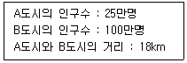
- 3.6
- 4.5
- 6
- 12
- 14.4
(정답률: 49%)
41. 제품들의 특성을 고려하였을 때 보기 중 적합한 입지가 다른 하나는 무엇인가?
- 부패성이 심한 제품의 경우
- 총비용 가운데 원재료 수송비가 절대적 비중을 차지하는 경우
- 중량이나 부피가 늘어나는 산업의 경우
- 재고의 확보가 필요한 제품의 경우
- 소비자와의 접촉이 많이 필요한 제품의 경우
(정답률: 39%)
42. ( )안에 들어갈 수 있는 가장 알맞은 단어를 순서대로 올바르게 나열한 것은?
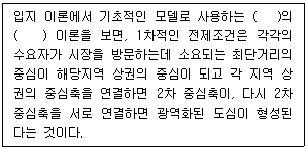
- Christaller, 다이아몬드형
- Christaller, 중심지
- Reilly, 정육각형
- Reilly, 소매인력
- Converse, 수정소매인력
(정답률: 57%)
43. 도매상권의 특성과 관련된 요소 중 상대적으로 중요성이 가장 떨어지는 것은?
- 소매상의 입지, 점포수 및 판매액
- 경쟁도매상의 입지, 분포 및 집적도
- 취급상품 및 상품군
- 도매상의 가시성
- 로지스틱스(Logistics) 비용
(정답률: 63%)
44. 출점할 점포에 대한 부지조사의 기본항목과 가장 거리가 먼 것은?
- 소유권, 소유자의 신용, 거래당사자의 법적 자격
- 토지대장, 도시계획도, 등기부등본
- 수로, 고압선, 마을길 등의 장애물
- 점포를 건설할 건설회사
- 상하수도, 전력, 가스 등 공공시설 현황
(정답률: 73%)
45. 다음 박스 안의 '이것'에 대한 설명으로 가장 옳지 않은 것은?
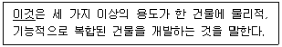
- 구성 요소들 간에 견고한 물리적 기능 통합에 의한 고도의 토지 이용을 창출한다는 특징이 있다.
- 도시 내에서 살고자 하는 사람들에게 양질의 주택을 공급할 수 있다.
- 용도들 간의 상호보완적인 지원 관계를 유지하면서 다양한 목적을 가진 이용 대상자 범위를 증대시킨다.
- 도심지가 서비스 기능 위주의 지역으로 변화하는 것을 방지할 수 있다는 장점이 있다.
- 도심공동화 현상이 발생할 수 있다는 부작용이 있다.
(정답률: 45%)
3과목: 유통마케팅
46. 어떤 제품의 개당 판매가격이 100원, 고정비가 200만원, 변동비가 60원일 때의 손익분기판매량을 구하고, 이 제품의 변동비가 80원으로 올랐을 때의 손익분기판매량을 순서대로 올바르게 나열한 것은?
- 60,000개, 100,000개
- 50,000개, 100,000개
- 60,000개, 90,000개
- 50,000개, 120,000개
- 40,000개, 60,000개
(정답률: 56%)
47. 소매업체들이 추구하는 성장전략에 대한 설명으로 가장 옳지 않은 것은?
- 현재의 소매업태를 사용하여 기존의 고객을 직접 공략하는 것을 시장침투전략이라 한다.
- 현재의 소매업태를 이용하여 새로운 시장을 공략하는 것을 시장확장전략이라 한다.
- 표적시장의 고객 중 자사의 점포에서 쇼핑하지 않는 고객을 유인하는 것을 소매유인전략이라 한다.
- 동일한 표적시장의 고객에게 새로운 소매업태를 제공하는 것을 소매업태개발전략이라 한다.
- 현재 공략하고 있지 않는 세분시장에 대해 새로운 소매업태를 제공하는 것을 다각화전략이라 한다.
(정답률: 43%)
48. 고객의 서비스 지각에 영향을 미치는 요인의 하나로 고객의 접근성과 관련된 항목으로 옳지 않은 것은?
- 웹사이트의 다운로드 속도
- 대기선에서 신속한 업무처리
- 편리한 영업시간
- 주문상태에 대한 정보제공
- 판매원의 용모
(정답률: 62%)
49. 시장침투가격전략에 대한 설명으로 가장 옳지 않은 것은?
- 규모는 작지만 수익성이 높은 세분시장에서 최대한의 수익을 올리기 위한 전략이다.
- 가격에 매우 민감하여 저가격이 더 높은 시장성장을 발생시키는 시장에 유효한 전략이다.
- 판매량이 증가할수록 단위당 생산원가와 유통비용이 하락하는 제품에 적용 가능한 전략이다.
- 시장침투가격을 선택한 기업이 저가격포지션을 계속 유지할 수 있어야 성공 가능한 전략이다.
- 단기간에 많은 수의 구매자들을 신속하게 끌어들여 높은 시장점유율을 확보하고자 하는 전략이다.
(정답률: 44%)
50. 소매상의 상품관리 전략에 대한 내용으로 가장 옳지 않은 것은?
- 상품전략은 고객의 욕구파악, 상품계획, 그리고 상표개발 등을 포함한다.
- 상품계획은 소매상의 목표를 달성하기 위해 상품믹스를 개발하고 관리하는 것이다.
- 상품믹스란 소매상이 고객에게 제공하는 적절한 상품의 조합을 말한다.
- 상품믹스의 결정은 상품의 구색 그리고 상품의 지원 등을 결정하는 것이다.
- 상표개발은 중소제조업체가 부착한 제조업체 브랜드를 구입하여 판매하는 것이다.
(정답률: 68%)
51. 저마진, 고회전율, 그리고 최소한의 서비스를 제공하는 것이 특징인 소매상에 대한 설명으로 가장 옳지 않은 것은?
- 운영의 효율성을 높임으로써 낮은 가격으로 고객에게 상품을 공급할 수 있다.
- 서비스를 최소한으로 낮추는 대신 소비자들은 낮은 가격에 상품을 구매할 수 있다.
- 다양한 범주의 상품을 취급하고 있으나 가격이 낮기 때문에 회전율이 높다.
- 브랜드 선호 없이 저렴함 때문에 구입하는 선매품을 판매하는 편의점이 이에 속한다.
- 이마트, 월마트, 그리고 하나로클럽 등의 다양한 할인점들이 이에 속한다.
(정답률: 60%)
52. 상품판매를 위한 진열 설비의 하나로 점두 및 점포 안의 요소에 설치하여 통행인의 주의를 끌고 또 점포안으로 유도하는데 활용하는 진열방식으로 옳은 것은?
- 마루 진열(floor display)
- 장식장 진열(window display)
- 벽면 진열(wall display)
- 카운터 진열(counter display)
- 서가 진열(shelf display)
(정답률: 48%)
53. 상품의 구성에 있어서 상품의 폭에 해당하는 것은?
- 브랜드의 다양성
- 디자인의 차별화
- 사이즈의 다양성
- 스타일의 차별화
- 상품군의 다양성
(정답률: 79%)
54. CRM(Customer Relationship Management)에 관한 내용으로 옳지 않은 것은?
- 고객과의 관계구축이나 관계강화를 통해 기업은 고객이 평생에 걸쳐 구매량과 구매액을 늘려 나가도록 함으로써 고객의 생애가치를 극대화하고자 한다.
- 우량고객이 될 가능성이 높은 후보자를 선별한다.
- 기존에 구매하던 제품과 관련된 다른 제품들의 구매를 유도한다.
- 장기간 거래해 온 고객의 거래 내역을 잘 알고 있기 때문에 거래를 자동화시켜 고정거래비용을 절감시킬 수 있다.
- 충성고객은 기업과의 거래에 드는 비용이나 가격에 민감해진다고 가정한다.
(정답률: 64%)
55. 가격할인 유형의 하나로서, 일시에 대량구매를 하는 경우 구매량에 따라 할인율을 다르게 적용하는 현금할인은?
- 장기거래할인
- 판매촉진지원금
- 수량할인
- 계절할인
- 상품지원금
(정답률: 77%)
56. 중간상의 수는 제품수명주기의 단계에 따라 달라질 수 있다. 제조업체 입장에서 볼 때, 매출이 잘 일어나지 않거나 불량채권을 많이 가진 중간상들과의 거래를 중단함으로써 자사제품을 취급하는 중간상의 수를 줄여 나가는 제품수명주기 단계는 무엇인가?
- 도입기
- 성장기
- 성숙기
- 쇠퇴기
- 도입기 및 성장기
(정답률: 73%)
57. 고객관계관리 모델에 필수적인 5가지 단계가 순서대로 올바르게 나열되어 있는 것은?
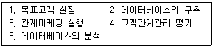
- 2-5-1-3-4
- 1-2-3-4-5
- 1-2-5-3-4
- 5-1-4-3-2
- 4-2-5-1-3
(정답률: 39%)
58. 서비스품질 구성차원(SERVQUAL)과 가장 관련이 없는 것은?
- 유형성(tangible)
- 신뢰성(reliability)
- 공감성(empathy)
- 확신성(assurance)
- 정보성(information)
(정답률: 67%)
59. 소매업체가 상품을 효과적으로 진열함과 동시에 효과적으로 보관하기 어려울 때, 이에 대한 해결책으로 고객의 눈을 끌기 위해 가능하면 상품 전체를 노출하고자 하는 상품 진열방법은?
- 수직적 진열(vertical merchandising)
- 적재 진열(tonnage merchandising)
- 전면 진열(frontage presentation)
- 색상별 진열(color presentation)
- 비주얼 진열(visual presentation)
(정답률: 59%)
60. 소매상의 소비자 판촉도구에 대한 설명으로 옳지 않은 것은?
- 쿠폰 - 명시된 제품을 구매할 때 구매자에게 할인을 제공해 준다는 증빙서
- 리베이트(현금 환불) - 구매시점에 구매하는 장소에서 가격할인을 제공
- 프리미엄 – 제품의 구매를 유도하기 위한 인센티브로, 무료 또는 낮은 비용으로 제공되는 상품
- 보너스 팩 – 정상가격으로 보다 많은 양의 제품을 제공하기 위해 큰 용기나 몇 개의 기존 용기를 묶어 판매하는 경우
- 추첨 – 소비자에게 운이나 추가 노력으로 현금, 여행, 제품과 같이 무엇인가를 받을 수 있는 기회를 제공
(정답률: 69%)
61. 제품의 세 가지 차원에 대한 설명으로 가장 옳지 않은 것은?
- 핵심제품(core product)은 상표, 스타일, 품질, 특징 등의 구체화된 요소들을 포함하며, 고객이 구매하는 실제 이유가 된다.
- 유형제품(tangible product)은 소비자가 제품으로부터 추구하는 혜택이 유형적으로 구현되어 소비자에게 인식된 것을 말한다.
- 유형제품(tangible product) 차원의 요소들을 다르게 구성함으로써 경쟁사의 제품과 차별화를 할 수 있다.
- 제품의 설치, 배달, 대금결제방식, 보증, 애프터서비스 등은 확장제품(augmented product)에 해당한다.
- 제품에 부여된 상표명은 유형제품(tangible product)에 해당한다.
(정답률: 30%)
62. 점포 레이아웃의 설계 및 관리를 위한 의사결정의 구성항목으로 옳지 않은 것은?
- 상품 및 집기의 배치와 공간 결정
- 계산대 배치 및 공간 결정
- 통로의 배치와 공간 결정
- 점포의 간판과 그래픽 결정
- 쇼핑공간 및 고객동선의 결정
(정답률: 83%)
63. 투사기법(projective technique)은 응답자 자신의 행동을 직접 설명하게 하기보다는 다른 사람의 행동을 해석하게 하여 응답자의 동기, 신념, 태도 등을 간접적으로 파악하려는 기법이다. 다음 중 투사기법에 해당되지 않는 것은?
- 단어 연상(word association)
- 문장 완성(sentence completion)
- 그림 응답(picture response)
- 사다리 기법(laddering)
- 역할 연기(role playing)
(정답률: 68%)
64. 촉진믹스의 구성요소 중 인적판매의 단점으로 가장 옳은 것은?
- 촉진의 속도가 느리며 비용이 과다하게 소요된다.
- 전달할 수 있는 정보의 양이 제한적이다.
- 고객별 전달정보의 차별화가 곤란하다.
- 경쟁사의 모방이 용이하여 촉진 효과가 짧다.
- 통제가 곤란하며 촉진의 효과를 측정하기 어렵다.
(정답률: 64%)
65. 점포 보안의 내용으로 옳지 않은 것은?
- 전체 점포에서 고객절도가 대부분이며, 종업원 절도는 없다.
- 고객들에 의한 사기는 신용카드 위조, 수표 위조 등 다양한 형태가 있다.
- 절도를 예방하기 위하여 보안분위기를 조성하고 정책을 완비해야 한다.
- 정식 보안요원을 배치하거나 고객을 가장한 보안요원들이 상시적으로 순찰할 필요가 있다.
- 공급업자도 때로는 절도를 할 수 있기 때문에 입출고처를 감독하고 조사해야 한다.
(정답률: 73%)
66. 점포내 고객동선을 결정할 때 고려할 사항과 거리가 먼 것은?
- 주 통로와 부 통로를 구분한다.
- 고객 1인당 평균동선은 가급적 짧게 설정한다.
- 시선집중을 위한 포인트를 설정한다.
- 사각이 없도록 한다.
- 상품탐색이 용이하도록 한다.
(정답률: 83%)
67. 어느 백화점의 경영 현황을 파악하기 위해 2차 자료(secondary data)를 수집하였다. 다음 중 2차 자료에 해당하지 않는 것은?
- 제품계열별 판매액
- 지점별 주요 제품 재고
- 지점별 고객 만족도
- 고객별 지출액
- 연간 성장률
(정답률: 44%)
68. 식품제조업체가 소매상의 구매증대를 위해 사용하는 판매촉진 전략으로 옳지 않은 것은?
- 가격할인
- PPL(product placement)
- 리베이트
- 판촉물 지원
- 시식행사 지원
(정답률: 40%)
69. 고객 컴플레인 처리방법으로 옳지 않은 것은?
- 상대방 의견에 동조하면서 긍정적으로 듣는다.
- 변명을 피한다.
- 설명은 감성적으로 접근한다.
- 솔직하게 사과한다.
- 신속하게 처리한다.
(정답률: 81%)
70. 아래 박스에서 설명하는 가격결정방식은 무엇인가?
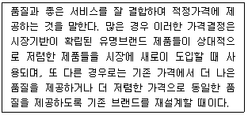
- 원가기반 가격결정(cost-based pricing)
- 고객가치기반 가격결정(customer value-based pricing)
- 우수가치 상응 가격결정(good-value pricing)
- 부가가치 가격결정(value-added pricing)
- 경쟁우위 기반 가격결정(competitive advantage-based pricing)
(정답률: 47%)
4과목: 유통정보
71. 고객관계관리를 위해 활용하는 기술인 웹마이닝에 대한 설명으로 가장 옳지 않은 것은?
- 웹 상에서 존재하는 모든 데이터(고객 신상정보, 구매기록, 장바구니 정보 등)를 대상으로 웹 데이터간의 상관관계를 밝혀내고, 웹 사용자의 의미 있는 접속행위 패턴을 발견하는 방법이다.
- 웹마이닝은 웹콘텐츠마이닝, 웹구조마이닝, 웹사용마이닝 등으로 분류해 볼 수 있다.
- 웹서버를 통해 이루어지는 내용이나 활동 사항을 시간의 흐름에 따라 기록하는 웹로그파일을 수집, 분석하여 의미있는 데이터를 추출해 내는 방법이다.
- 웹마이닝의 분석 대상인 로그파일은 Access log, Refferer log, Agent log, Error log 등이 있다.
- 웹로그 추출방식 중 네트워크에서 주고 받는 패킷데이터에 담긴 사용자의 로그인 정보를 빼내는 방법을 응용하여 방문자의 트랜잭션을 수집하는 TAG방식이 있다.
(정답률: 62%)
72. 최근 유통채널 관리를 위한 정보시스템 구축시, 방대한 양의 정보의 효율적 관리 및 자원의 효율적 활용을 위한 방안으로 제시되고 있는 신기술 중 하나인 클라우드 컴퓨팅에 대한 설명으로 가장 옳지 않은 것은?
- SaaS, PaaS, IaaS 등으로 제공되는 서비스 특성에 따라 유형을 구분해 볼 수 있다.
- 웹메일이나 웹하드 서비스 등 사용자의 메일이나 정보를 저장하는 하드디스크 공간을 웹상에 가지고 있으면서 인터넷 접속이 가능한 곳 어디서나 확인할 수 있는 서비스가 클라우드 컴퓨팅 서비스에 속한다.
- 사용자는 제공받는 서비스와 관련 IT기술에 대한 전문적인 지식(서버관리, 소프트웨어 유지보수 등)이 반드시 있어야 하나, 자원 활용에는 매우 획기적인 성과를 준다.
- 클라우드 컴퓨팅 기술은 흔히 네트워크 상에서 인터넷을 '구름'모양으로 표현한데서 그 명칭의 유래를 찾아볼 수 있다.
- SaaS는 웹을 통한 서비스로 제공되는 소프트웨어를 이용한다는 개념이다.
(정답률: 68%)
73. 노나카의 SECI모델에 대한 설명으로 가장 옳지 않은 것은?
- 외부화 - 제품개발 과정의 컨셉창출, 최고경영자의 생각을 언어화하는 일, 숙련 노하우의 언어화, 고객의 암묵적인 니즈를 표출하고 현재화시키는 일
- 종합화 – 언어 문서, 데이터베이스 또는 전자메일 등의 매개로 분류, 가공, 조합, 편집에 의한 지식 창조
- 내면화 – 노하우, 매뉴얼 등을 롤 플레잉 등에 의해서 개개인의 내부에 체험적으로 이해시키는 일
- 사회화 – 고객의 불만이나 불평사항을 체감하고 이를 그림이나 글로 표현하여 팀간 지식 공유를 하는 노력
- 종합화 – 전략, 컨셉의 구체화 등 작업, 부문 간 조정으로 경영수치를 만들고, 제품 사양서 작성
(정답률: 50%)
74. 최근 들어, 우리 문화와 경제의 수요곡선 머리부분에 위치한 상품 뿐만 아니라 꼬리부분에 위치한 상품에도 관심이 집중되고 있다. 이러한 현상에 대한 설명으로 가장 옳지 않은 것은?
- 가상 공간의 시장에는 히트상품보다 틈새상품들에 대한 요구가 상대적으로 더 많아지고 있다.
- 틈새상품을 구매하는데 드는 비용이 현저하게 증가하고 있다.
- 틈새상품을 추천상품으로 노출시키거나 순위를 매기는 등과 같은 다양한 기법으로 수요를 일으켜서 몰려들게 한다.
- 꼬리부분의 수요가 점점 더 증가하여 곡선이 점점 더 평평해지고 있다.
- 틈새상품의 총합은 히트상품들과 경쟁가능한 시장을 형성하고 있다.
(정답률: 47%)
75. 전자상거래를 수행하기 위한 보안 요건에 대한 설명으로 가장 옳지 않은 것은?
- 무결성(Integrity) : 데이터가 전송 도중 또는 데이터베이스에 저장되어 있는 동안 악의의 목적으로 위‧변조되는 것을 방지하는 서비스다.
- 기밀성(Confidentiality) : 비인가자가 부당한 방법으로 정보를 입수한 경우에도 정보의 내용을 알 수 없도록 하는 서비스다.
- 인증(Authentication) : 고객들이 자신이 구매하는 것에 대하여 다른 사람들이 모른다는 것이 보장되기를 원하는 서비스다.
- 부인방지(Non-Repudiation) : 송수신 당사자가 각각 전송된 송수신 사실을 추후 부인하는 것을 방지하는 서비스다.
- 안전(Safety) : 고객들이 인터넷에 신용카드 번호를 제공하는 것이 안전하다고 보장받기를 원하는 서비스다.
(정답률: 68%)
76. 박스 안에서 설명하는 물류정보시스템으로 가장 옳은 것은?
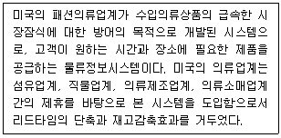
- CD
- CRP
- CAO
- CPFR
- QR
(정답률: 73%)
77. 정보통신망을 통하여 전송 시 필요한 메시지 서명방법인 전자서명이 갖추어야 할 특성으로 가장 옳지 않은 것은?
- 서명은 서명자 이외의 다른 사람이 생성할 수 없어야 한다.
- 하나의 문서의 서명은 다른 문서의 서명으로 사용할 수 있어야 한다.
- 서명자가 자신이 서명한 사실을 부인할 수 없어야 한다.
- 서명은 서명자의 의도에 따라 서명된 것임을 확인할 수 있어야 한다.
- 서명한 문서의 내용을 변경할 수 없어야 한다.
(정답률: 76%)
78. 정보 단위를 나타내는 용어와 정보의 크기가 잘못 연결된 것은?
- 1헥토(Hecto) - 100 바이트
- 1킬로(Kilo) - 1,000 바이트
- 1메가(Mega) - 100만 바이트
- 1기가(Giga) - 1억 바이트
- 1테라(Tera) - 1조 바이트
(정답률: 28%)
79. SCM의 성공 요인으로 가장 옳지 않은 것은?
- 우선적으로 공급체인상의 모든 업체들의 적극적인 구축 의지가 필요하다.
- 공급체인에 속한 개별 업체들은 공급체인의 전체적인 관점에서 경쟁우위를 확보할 수 있어야 한다.
- 공급체인에 속한 개별 업체들간의 정보공유는 선택적인 사항이다.
- 공급체인에 속한 개별 업체들간의 업무연계가 필요하며 가능하면 공급체인상의 모든 업체들의 업무 프로세스가 통합되어야 한다.
- 공급체인에 속한 개별 업체들간의 전략적 제휴를 공식적으로 제도화하는 것이 필요하다.
(정답률: 73%)
80. ERP도입시 유의해야 할 사항으로 가장 옳지 않은 것은?
- 사용자의 편의성과 효율적인 운영을 고려하여 현재의 업무방식을 그대로 고수해야 한다.
- ERP 패키지 도입시 구축 전에 데이터의 표준화 및 업무의 표준화가 정립되어야 한다.
- ERP 패키지 도입에 있어 IT 중심으로 패키지를 도입하는데 중점을 두어 추진되는 프로젝트로 진행되어서는 아니 된다.
- 업무상의 효과보다 소프트웨어의 기능성 위주로 적용 대상을 판단해서는 아니 된다.
- 최고 경영층을 프로젝트에서 배제시켜서는 아니 된다.
(정답률: 60%)
81. CRM을 구축하기 위한 전제조건과 CRM에 대한 특징으로 가장 옳지 않은 것은?
- 시장점유율 보다는 고객점유율에 좀 더 비중을 둔다.
- 고객평생가치 극대화를 통한 고객유지보다는 신규고객 획득에 좀 더 중점을 둔다.
- 제품판매 보다는 고객관계관리에 중점을 둔다.
- 고객 통합 데이터베이스가 구축되어 있어야 한다.
- 고객 특성을 분석하기 위해 마이닝 도구를 활용한다.
(정답률: 74%)
82. OLAP(Online Analytical Processing)와 OLTP(Online Transaction Processing)간 비교 설명한 것으로 가장 옳지 않은 것은?
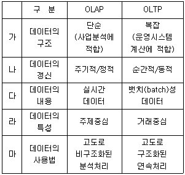
- 가
- 나
- 다
- 라
- 마
(정답률: 36%)
83. 다음은 인터넷이 제공하는 대표적인 서비스에 대한 설명이다. 무엇에 대한 설명인가?
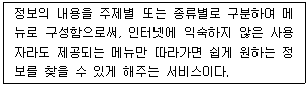
- IRC(Internet Relay Chatting)
- Telnet
- Gopher
- Archie
- Browser
(정답률: 45%)
84. 기업들이 인터넷에서 EDI 역량을 구축하는 이유로 가장 옳지 않은 것은?
- 인터넷은 대규모의 접속 가능성으로 폭넓은 비즈니스활동 범위의 확장에 대한 기반이 된다.
- 인터넷은 거래가 가능한 파트너들에 대해 가장 폭넓게 도달할 수 있는 잠재력을 제공한다.
- 인터넷을 이용하면 통신비용은 VAN의 경우보다는 고가이지만 민감한 데이터들의 전송은 VPN을 통해 보호될 수 있다.
- 인터넷 기반 EDI에서는 최신 EDI의 사용을 보완하거나 대체가 용이하다.
- 인터넷 기반 EDI에서는 협업, 워크플로우, 검색 엔진과 같은 기능들을 가지고 있다.
(정답률: 66%)
85. EDI도입시 기대할 수 있는 효과로 가장 옳지 않은 것은?
- 데이터 입력의 정확성
- 서류처리에 관련된 비용의 감소
- 정보 교환의 신속성
- 효율적인 인력활용 가능
- 사용자의 정보 가공 용이
(정답률: 54%)
86. e-비즈니스 시스템을 구성하기 위한 필수 요소중의 하나인 머천트(Merchant)시스템 및 서버 종류의 하나로 상인이 고객에게 직접 서비스하기 전에 실제 상황과 동일한 환경에서 상품을 로드(load)하여 디스플레이, 가격 등 여러 가지가 자신이 원하는 형태로 상품이 로드 되었는지를 사전에 검토하기 위한 시스템은 무엇인가?
- Merchant server
- Transaction server
- Staging server
- DBMS
- SMTP server
(정답률: 30%)
87. 형식적 지식의 특성으로 가장 거리가 먼 것은?
- 형식적 지식은 확산될 수 있다.
- 형식적 지식은 압축할 수 있다.
- 형식적 지식은 맥락의존적이다.
- 형식적 지식은 공유할 수 있다.
- 형식적 지식은 운반할 수 있다.
(정답률: 72%)
88. 지식경영을 실천하였을 때 얻을 수 있는 이점으로 가장 옳지 않은 것은?
- 지식경영은 사고의 자유로운 흐름을 촉진함으로써 혁신을 촉진한다.
- 지식경영은 상품과 서비스를 보다 신속하게 시장에 제공할 수 있게 지원함으로써 수입을 증가시키는 효과를 가져올 수 있다.
- 지식경영은 종업원들의 지식에 대한 가치수준을 인식하고 보상함으로써 종업원들의 사기를 강화하게 한다.
- 지식경영은 지적 자본보다는 물적 자본으로부터 가치를 만들어 가는 과정이다.
- 지식경영은 불필요한 과정을 제거함으로써 효율적인 운영을 통해 비용을 감소시킨다.
(정답률: 68%)
89. Simon에 의하면 문제는 비구조적 문제와 구조적 문제 그리고 반구조적 문제로 나눌 수 있다. 다음 중 구조적 문제의 특징을 가장 잘 설명한 것은?
- 비반복적인 문제로서 문제의 성격이 쉽게 파악되지 않는다.
- 문제 해결을 위한 대안의 모색 및 선정이 용이하지 않다.
- 의사결정자의 분석, 지능, 능력, 경험 등에 의한 판단이 절대적으로 필요하다.
- 의사결정의 규칙이 마련되지 못하여 수차례의 시행착오를 통하여 최선의 대안을 모색한다.
- 문제 해결을 위한 일련의 절차 및 방침, 규칙이 설정되어 쉽게 분석할 수 있다.
(정답률: 67%)
90. 최근 유통정보시스템 구현에 있어 실시간 정보 획득 기반기술로 초연결사회에 핵심 주요 기술로도 꼽히는 기술에 대한 설명이다. ( )안에 가장 적절한 용어는 무엇인가?
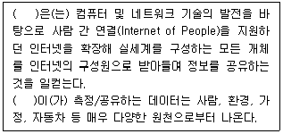
- 지그비(Zigbee)
- 빅데이터(Bigdata)
- 센서(Sensor)
- 클라우드 컴퓨팅(Cloud Computing)
- 사물 인터넷(Internet of Things)
(정답률: 50%)